第6章 集成运放及应用电路
- 集成运放的理想化条件: 虚短 (), 虚断 ().
- 具体而言:
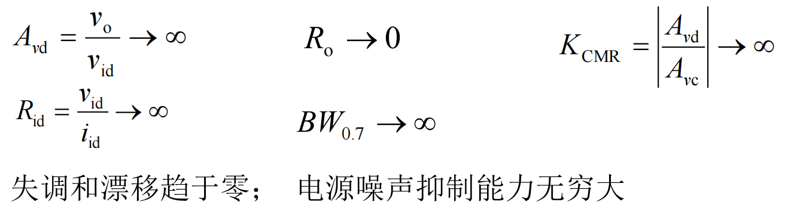
- 具体而言:
基本放大器
- 反相放大器: .
- 同相放大器: .
- 时, , 构成同相跟随器.

- 时, , 构成同相跟随器.
闭环应用
- 加减法器: 利用叠加原理.
- 反相加法器: .
- 同相加法器: 注意分压. .

- 积分微分电路:
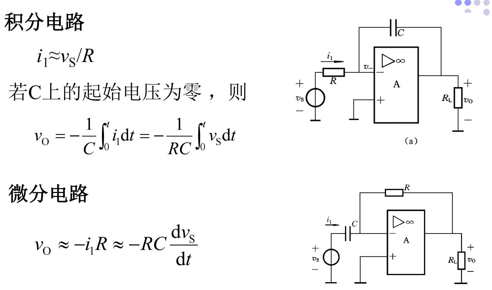
- 对数, 反对数放大器:
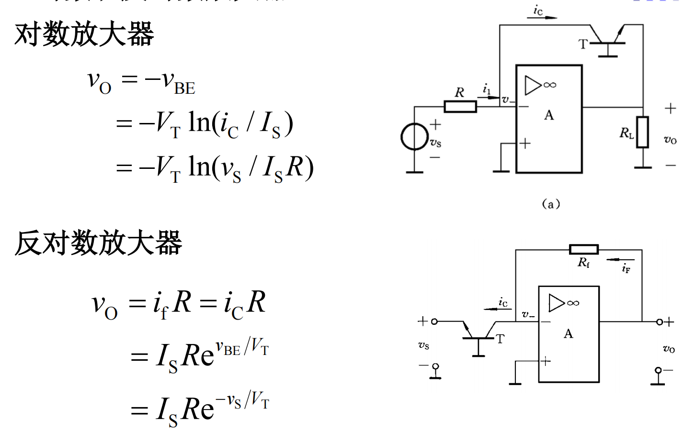
- 乘除法器: 利用跨导线性环.
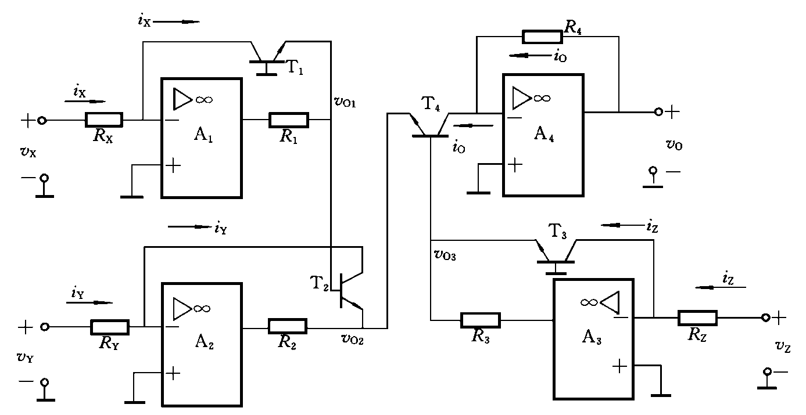
- 仪器放大器: 类似加减法器, 叠加原理分析即可.
- 其中 可调, 用于仪器中的增益调节.
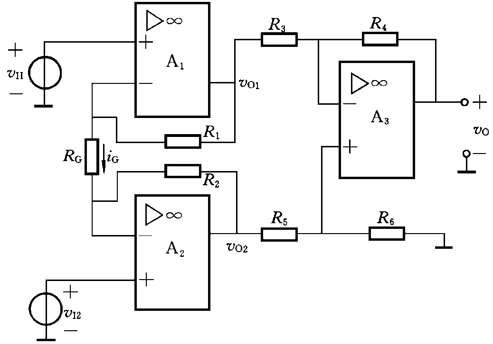
- 其中 可调, 用于仪器中的增益调节.
- 有源滤波器:
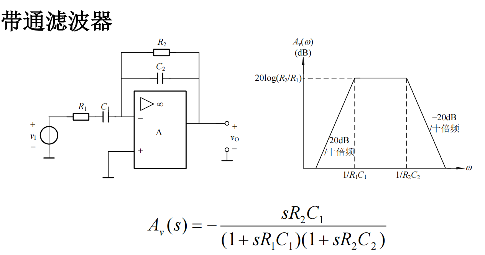
- 通过类似的原理, 可以制作出高通, 低通与带阻滤波器.
- 好处: 增益高, 且较稳定.
开环应用
- 单限电压比较器: 处为翻转点.
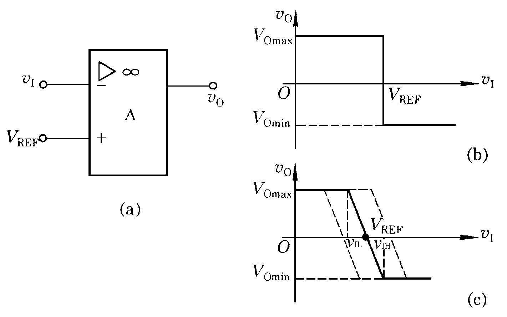
- 迟滞比较器: 存在正反馈. 可以求出 关于 的方程. 时, 发生翻转.
- 一般来讲, 从 较小处进入, 都应先到达上门限.
- 利用方程 求出+端电压, 并与-端进行比较.
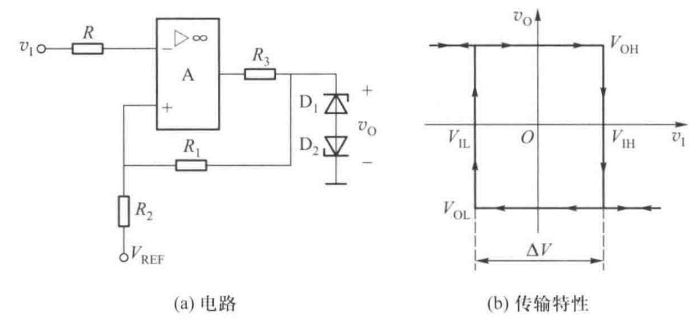
- 方波发生电路: 利用电容的充电.
- 方波的周期: .
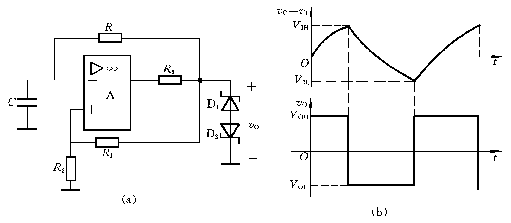
- 方波的周期: .
混合应用
- 原理: 输入电压不同时, 运放用作的功能也不同.
- 整流电路: 在反相器与电压跟随器之间切换.
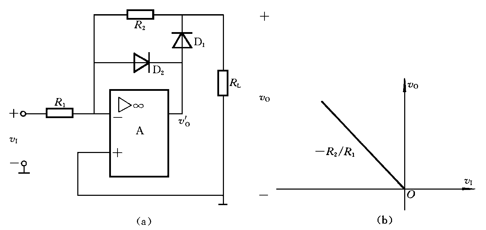
- 精密转折点电路: 添加参考电压, 改变传输曲线的拐点.
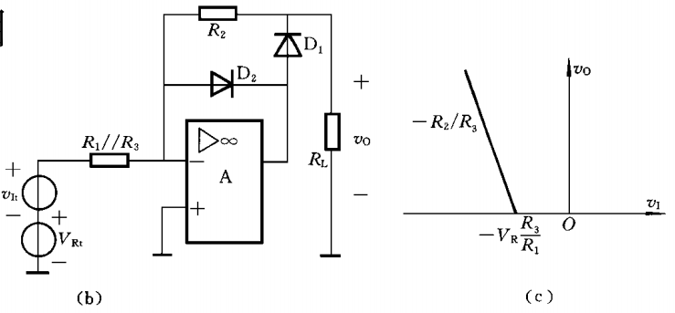
- 采用多个不同转折点的电路接加法器, 可以用于生成非线性传递函数. (泰勒公式的思想)
运放理想化的影响
- : 很小时, 产生影响.
- : 高频时, 减小, +, -端口之间出现电流.
- : 不满足 时, 运放难以带动负载.
- : 带宽非理想化.
- (摆率, Slow Rate): 定义为 , 反应电压随时间变化的速率. 满足 , 即电容充电时间. 对于正弦波, 要求摆率大于其最大斜率, 即 .